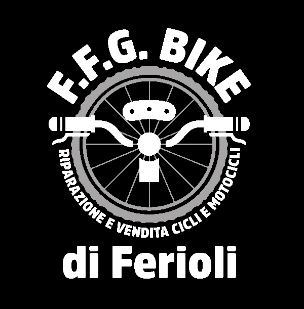

🚲
Biciclette
Scopri le biciclette disponibili e trova quella adatta alle tue esigenze.

Biciclette, mobilità elettrica, riparazioni e assistenza. Siamo qui per accompagnarti in ogni pedalata.
Dalla scelta della bici alla manutenzione: trovi qui quello che ti serve.
Scopri le biciclette disponibili e trova quella adatta alle tue esigenze.
Soluzioni per muoverti in modo pratico, anche con la pedalata assistita.
Manutenzione e riparazioni per aiutarti a tornare in sella.
Chiedici informazioni sui modelli e sui prodotti disponibili in negozio.
La tessera fedeltà digitale di F.F.G. BIKE. Accumula punti con i tuoi acquisti e le riparazioni, e scopri i vantaggi riservati ai clienti.
Una tessera digitale personale, sempre a portata di telefono.
Segui i tuoi punti e scopri i premi disponibili nel programma.
Consulta i vantaggi che potrai riscattare quando saranno disponibili.
Hai bisogno di informazioni su una bici, una riparazione o BIKE POINTS? Contattaci o passa in negozio.
Il tuo punto di riferimento per biciclette, mobilità elettrica e assistenza.